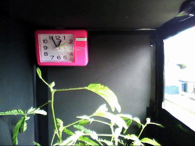

A research topic I worked on in the science club during high school.
高校時代はオジギソウ（Mimosa pudica）という植物の光屈性に関する研究をしていました。
オジギソウはその名の通り、手で触るとお辞儀のような動きをすることがよく知られていますが、実は光刺激にもよく反応します。反応のスピードも他の植物と比べて非常に速く、葉の真横から太陽光を当てると、だいたい20分ぐらいで葉の根元からぐいーっと曲がっていきます。

この特徴的な動きについて、屈曲する部位の特定や反応する光の波長、内部構造などを調べ、中高生の科学系の大会で発表したり、簡単な論文にまとめたりしていました。
その結果、それなりにデカい大会で賞をいただき、勉強がうまくいかずに自己肯定感を失っていた高校生の私にとっては大きな自信になりました（ほとんど指導教員の力だったと思いますが）。この経験が今の「研究が好き」という気持ちにつながっているのかもしれません。
当時はそのまま大学の理学部に進み、もっと植物の研究をしたいと漠然と思っていましたが、よくよく考えると生物の授業をまあまあサボっていたこと、化学がめちゃくちゃ苦手なこと、就職先がよくわからなかったこと、そもそもオジギソウ以外の植物にあまり興味がなかったことなどが重なって、高校3年次の進路選択の段階で大胆に方針転換。結局ロボット（機械系）の道に進みました。
でも、動く植物って面白いですよね。